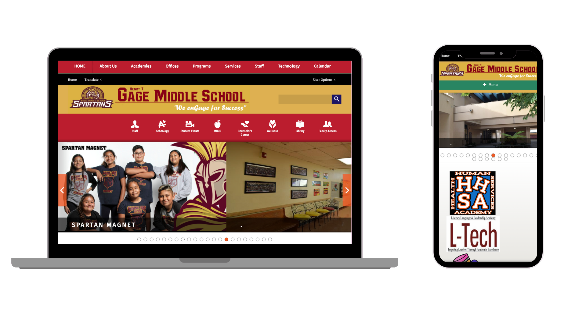
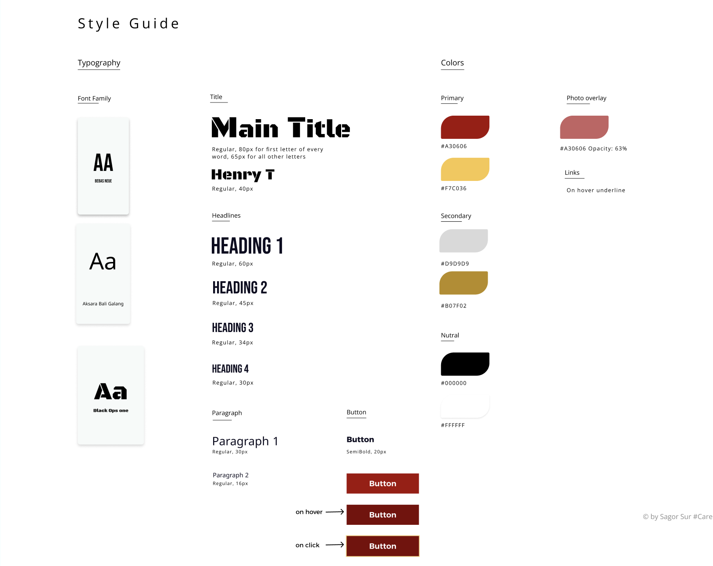
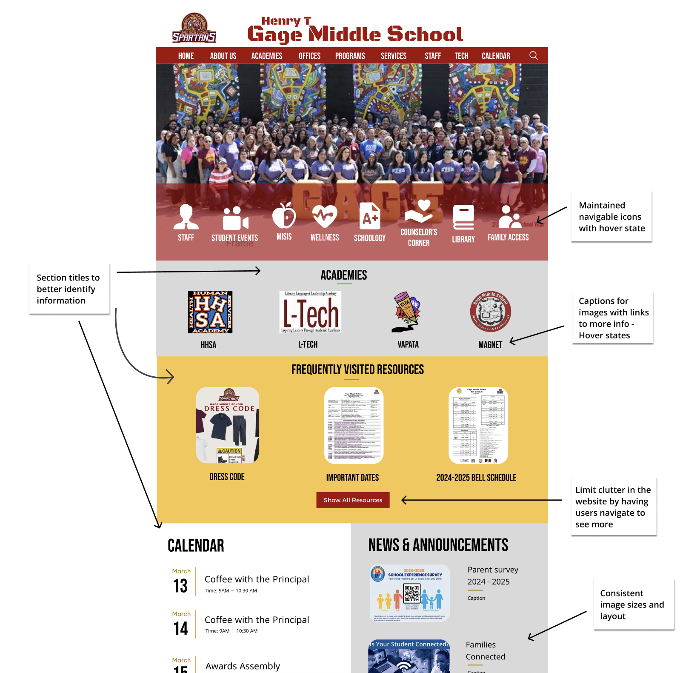
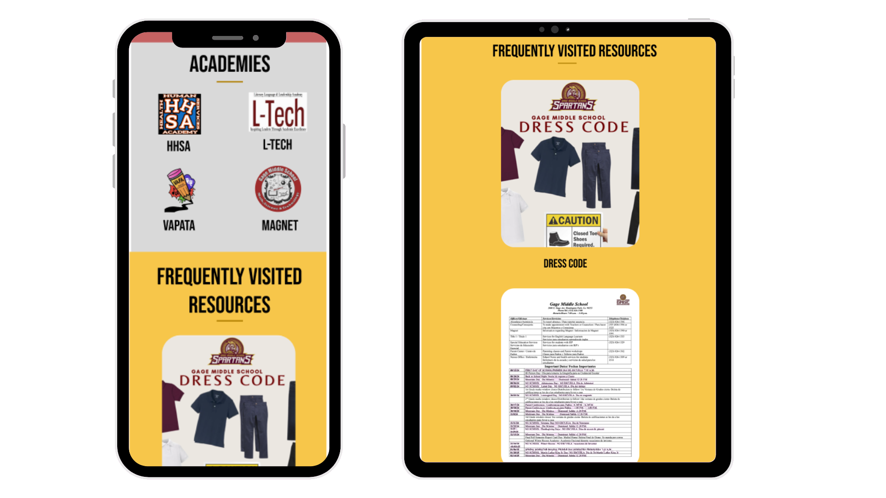
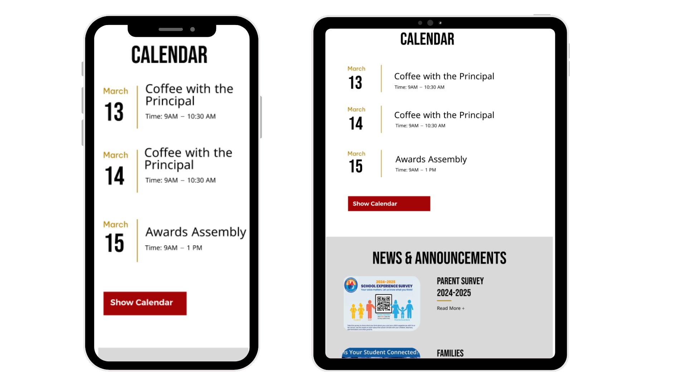
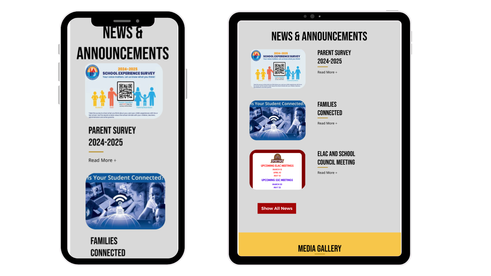
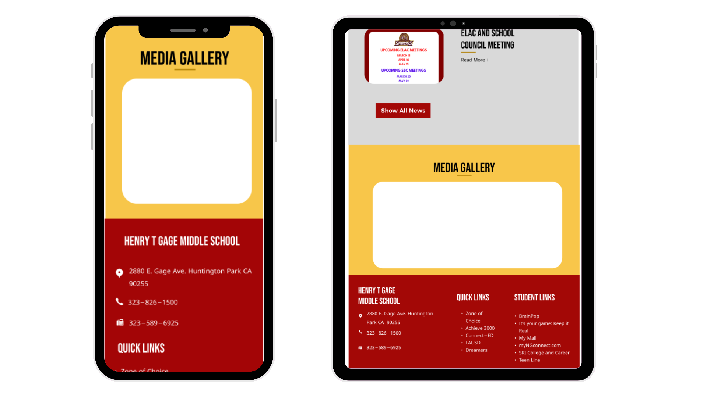

Mockup of phone & tablet
(Full page not pictured)
.png)

My goal this week was to redesign my middle school's web page as I felt its interface was not serving the users. I first analyzed and identified flaws in the existing interface then created mockups that addressed usability problems. I then built a responsive web page using my prototypes. Below are the stakeholders the website serves, problems with the current website, and my responsive redesign.
Original Website
https://www.gagems.net/Purpose
The homepage displays photos of the school, annoucements and highlights, upcoming events, quick links, and what appears to be resources.
The website serves
Usability Problems
Accessibility Problems
Using WebAim Wave to analyze the accessibility of the website, WebAim did not detect too many major errors - just alerts. There were 3 errors: 1x empty link, 1x multiple form labels and 1x broken aria menu. There were also 2 constrast errors , numerous redundant links, alt tags,and title text.
Next, I created a visual design style guide and mockups for a laptop, ipad, and phone that addressed the usability and accessibility issues.

Visually, my goal was to make the website easier to read/skim through. I did this by having clear typography to identify section titles and subheadings vs regular text. I also made the text bigger to address readability issues. I also added hover states to all the links & buttons making it clear that they are navigable.
Using Figma, I designed an responsive interface that works for all screen sizes.
Mockup of Macbook Air

My goal when creating the mockups was to organize all the information in the website better. This consisted of reading through the website and categorizing all the information to fit into a clear label so users can easily find it. Condensing the information into sections also helped me target the accessibility issue of having redundant links.
Relevant Sections Identified:
Design Decisons:
Responsiveness:
Mockup of phone & tablet
(Full page not pictured)
Icons are in grid layout; rows of 4 for tablets and rows of 3 for smaller displays. Spacing between links in navbar decreases with screen size until it compresses into a Menu popup (pictured in the phone).

Images in academies in grid; row of 4 for larger-to-meduim displays and rows of 2 for smaller. Flyers in frequently visited resources change to vertical layout (stacked) on medium-to-small displays.

Calendar and News & Announcements section change to vertical layout (stacked). Text wraps to fit smaller screens.

News & Announcements mantains a horizontal side-by-side layout for each flyer and its title for meduim displays. For smaller displays, the text breaks into a new line under the corresponding flyer.

Photo slideshow scales as screen gets smaller. Spacing between columns in footer decreases on meduim displays and stacks on smaller/phone displays.
Redesigned Website
https://kayleencruz.github.io/web-redesign/To create a responsive web page, I utilized HTML and TailwindCSS. As for design, I stayed accurate to the mockups and visual style guide. This design made the webpage easily navigatable and simplified finding information while working with all screen sizes. It was coding the page that I addresssed the errors from WebAim Wave. I made sure to have specific alt tags for all images, remove redudant title text, and have text sizes that are responsive and readable for all screen sizes.
Feel free to explore the website on your own! :D
I learned how to build with accessibility-first principles, ensuring that core components are usable across a wide range of devices and input methods. I also gained experience implementing responsive layouts using media queries and JavaScript to dynamically collapse and manage navigation elements—skills essential to frontend engineering.